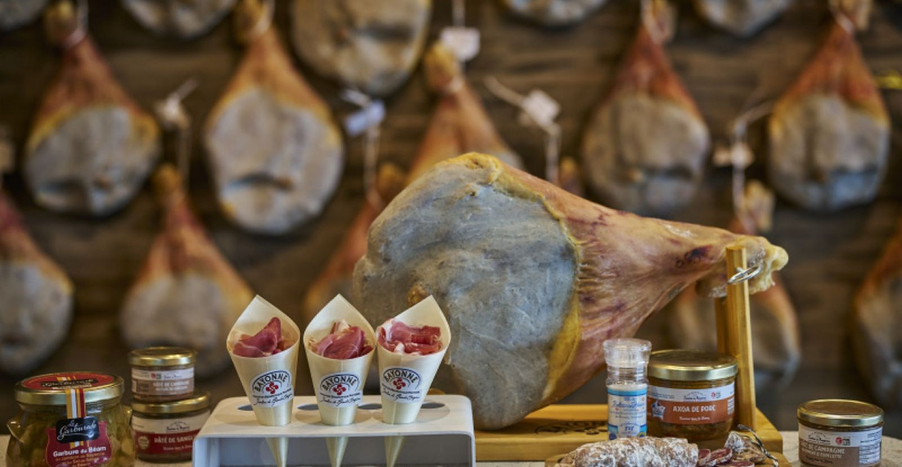

Jambon
de Bayonne IGP


⟹ Charcuteries & Terroir Basque ⟸
Le jambon de Bayonne est l'un des jambons crus les plus anciens et les plus célèbres de France. Produit depuis plus de mille ans dans les Pyrénées-Atlantiques, il tient son nom de la ville de Bayonne qui fut pendant des siècles le grand port d'exportation de ce produit vers les pays du nord de l'Europe. Son IGP, obtenue en 1998, garantit aujourd'hui l'origine et la qualité d'un savoir-faire millénaire.

Les premières mentions écrites du jambon de Bayonne remontent au XIe siècle. La légende raconte que le vicomte Gaston Phébus, grand chasseur et seigneur du Béarn, aurait découvert par hasard les vertus conservatrices du sel de Salies-de-Béarn en voyant un sanglier blessé se rouler dans une source salée. Qu'elle soit vraie ou non, cette histoire illustre parfaitement le rôle central du sel dans l'identité du jambon bayonnais.
« Le jambon de Bayonne est la gloire de la charcuterie française — sa douceur, sa finesse et son arôme sont incomparables. »
— Curnonsky, Prince des gastronomes, XXe sièclePendant des siècles, Bayonne a été le débouché commercial naturel des jambons produits dans tout le bassin de l'Adour. Les marchands basques et béarnais convoyaient leurs productions vers le port de Bayonne, d'où les jambons partaient vers l'Angleterre, les Pays-Bas et les pays nordiques, friands de ces charcuteries parfumées aux herbes des Pyrénées.
L'élément fondateur qui distingue le jambon de Bayonne de tous ses concurrents est le sel de Salies-de-Béarn, une saumure naturelle d'une concentration exceptionnelle — dix fois plus salée que l'eau de mer — extraite depuis des siècles des sources souterraines de cette petite ville béarnaise. Ce sel, aux propriétés minérales particulières, est l'un des secrets de la saveur unique du jambon bayonnais.
Aujourd'hui, plus de sept millions de jambons de Bayonne IGP sont produits chaque année, faisant de lui l'une des charcuteries françaises les plus exportées dans le monde. Malgré cette industrialisation partielle, les exigences de l'IGP maintiennent des standards de qualité stricts qui perpétuent l'authenticité du produit.
Jambon de Bayonne nature : la version classique, salée uniquement au sel de Salies-de-Béarn, avec ses arômes doux et délicats. À déguster tel quel, finement tranché.
Jambon de Bayonne au piment d'Espelette : la version basquaise par excellence, avec une légère chaleur en finale qui réveille les papilles sans masquer la finesse du jambon.
Jambon de Bayonne aux herbes : certains producteurs incorporent de l'ail, du thym ou du romarin lors du salage pour une personnalité aromatique plus marquée et herbacée.
Jambon de Bayonne en cuisine : indispensable dans la piperade, le poulet basquaise, les œufs sur le plat à la bayonnaise ou les brochettes de Saint-Jacques. Sa saveur douce et peu salée en fait un ingrédient culinaire polyvalent et raffiné.
Jambon de Bayonne de montagne : produit par de petits artisans dans les vallées pyrénéennes, avec des porcs élevés en plein air, il développe des arômes plus intenses et une texture plus ferme que les productions industrielles.
Le jambon de Bayonne IGP est disponible partout en France, mais les meilleures adresses restent celles du Pays basque et du Béarn.
Les Halles de Bayonne — Le temple du jambon bayonnais. Ce marché couvert historique accueille des dizaines de producteurs et charcutiers qui proposent des jambons entiers, des tranches fraîches et des produits dérivés. Un incontournable lors d'un séjour à Bayonne.
Salies-de-Béarn — La ville du sel, berceau de l'ingrédient fondamental du jambon. Plusieurs producteurs artisanaux y proposent des jambons de qualité exceptionnelle, séchés selon les méthodes traditionnelles.
Saint-Jean-Pied-de-Port — Au cœur du Pays basque intérieur, de nombreux producteurs et épiceries fines proposent des jambons de montagne aux arômes incomparables.
Foire au jambon de Bayonne — Événement annuel incontournable organisé pendant les fêtes de Pâques, cette foire réunit des centaines de producteurs et attire des dizaines de milliers de visiteurs venus déguster et acheter directement aux artisans.
Consortium du jambon de Bayonne — L'organisme officiel de gestion de l'IGP propose sur son site internet une carte interactive de tous les producteurs et détaillants agréés dans toute la France.